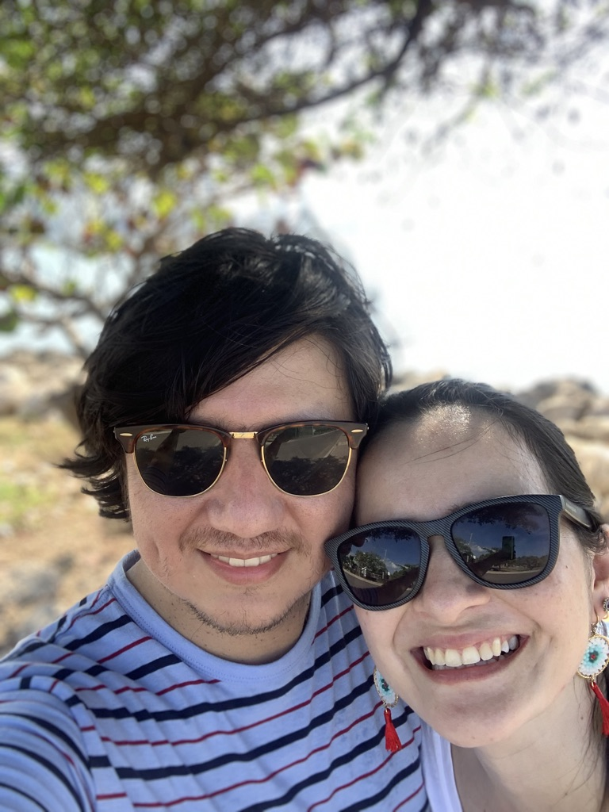
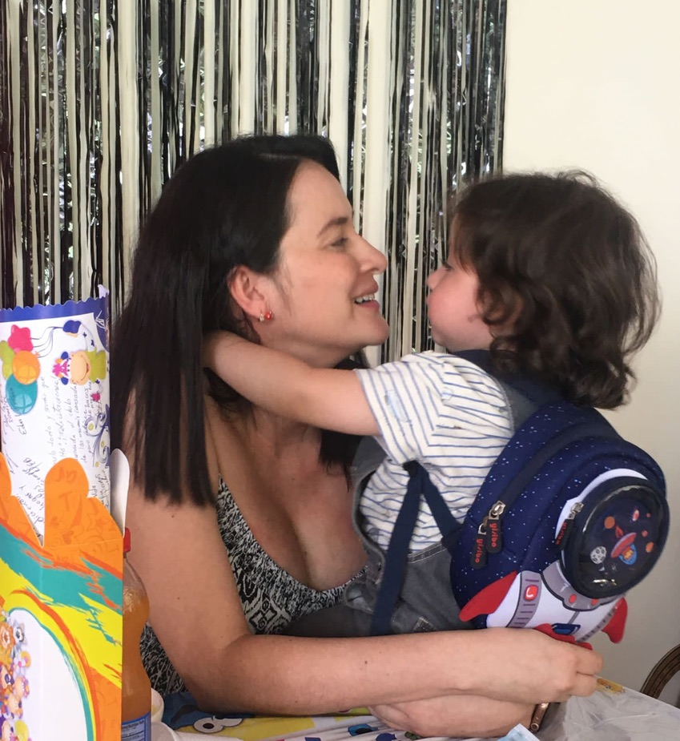
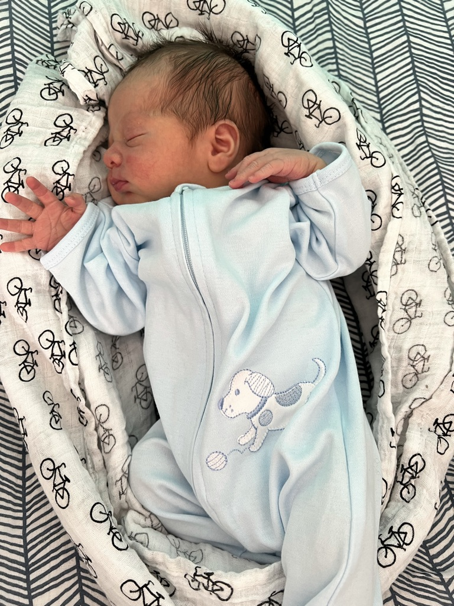

Soy una orgullosa mamá y esposa tengo dos hermosos hijos: Mateo de 22 meses y Martín de una semana. Soy una mujer muy feliz que tiene una linda familia con un fabuloso compañero de vida que me enseya dia a dia nuevas cosas y me ha llevado a emprender una nueva carrera
Ser mamá me enseño a ser una mejor mujer, mas dedicada, tolerante, cariñosa y amante de los pequeños momentos. A partir del nacimiento de mi primer hijo decidí documentar toda la experiencia mediante un TIK TOK e INSTAGRAM, nos podras encontrar como Caro_y_Mateo, con consejos muy utiles sobre productos para bebes y alimentacion complementaria.
 
Ingeniera Industrial, con maestria en Investigación Operativa y Estadística siempre fui excelente estudiante y por tanto obtuve mi maestria con una beca por mi promedio de 4,5.
Siempre me ha gustado estudiar y demostrarme a mi misma que puedo ser la mejor y sacar provecho a cada momento y a cada aprendizaje.
Desde que me gradue me desempeño como docente de matemáticas, labor que me ha traido bastantes aprendizajes y reconocimientos, es asi que en el año 2013 fui seleccionada como la mejor docente del colegio donde laboraba.
Mis sueño es ver a mis hijos crecer y convertirsen en unas excelentes personas, buenos profesionales, hombres, felices, buenos esposos, considerados, amables, inteligentes.
Mi sueño es transformar mi carrera y convertirme en una excelente desarrolladora, destacada, demostrando que las mujeres podemos introducirnos en este mundo hasta ahora dominado por hombres y destacar, haciendolo mejor porque tenemos muchas cualidades adicionales que nos hacen ser las mejores en todo lo que queremos